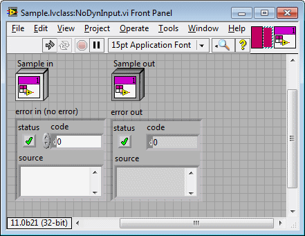

This VI has one or more indicators marked as dynamic output(s). This error occurs when there is no matching dynamic input. A VI can have a dynamic input with no dynamic outputs. However, a VI cannot have dynamic outputs without a dynamic input.
To correct this error, add a dynamic input terminal to the connector pane or remove all dynamic output terminals.